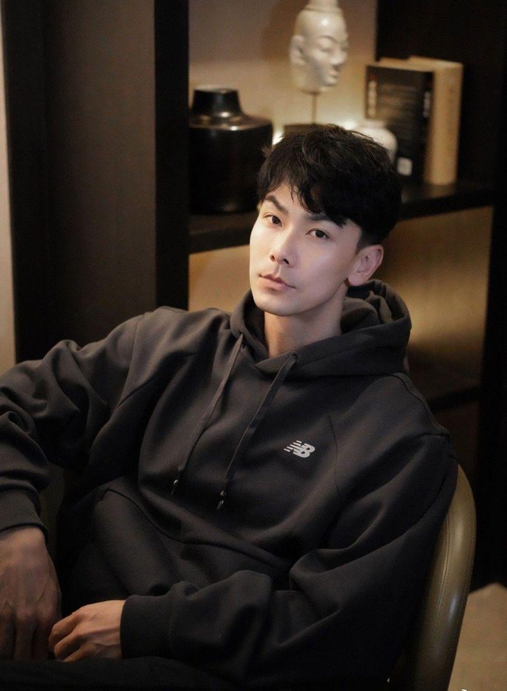
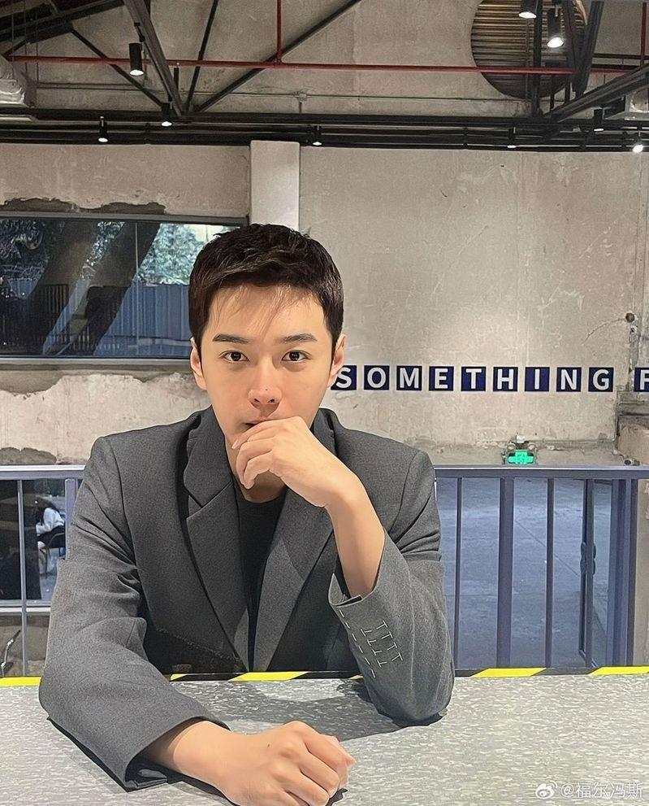

衰卷「嫖娼瓜」的大陆40岁男星戴向宇发文指工作全部被叫停，自己只能拚命「自证」；至于惹出这场风波的「庆余年2」太子张昊唯也再次发文，表示自己错得非常离谱，再度向戴向宇道歉，表示：「我会用一辈子反省」。
综合媒体报导，戴向宇发文讲述自己遭受这场「嫖娼风波」的影响，他表示，对于此事没有愤怒只有无奈：「我是一个大龄男艺人，没有流量，试想一下谁会用一个可能有雷，并且没有什么流量的人，之前沟通的工作也全部叫停，所以我只能拚了命的来自证」，但他表示，即便是出具无犯罪纪录证明，网友们依然不愿意相信。
戴向宇感谢太太陈紫函的支持与信任，并且相信张昊唯是无意的，是被有心之人利用；但这件事对他造成很大的影响，他感慨造谣成本太低了，轻易地就抹杀他努力了17年的形象，让他和家人受到巨大的伤害。
戴向宇并表示，以后如果还有恶意传播谣言的，他一定会继续拿起法律武器来保护自己和家人。
至于有别于第一篇道歉文里，张昊唯喊冤说录音内容是经过变造，这次却坦承「与戴向宇大哥有关的传闻，是我道听途说，是未经证实的谣言」；他表示会记取深刻教训，「用一辈子去反省，在未来的人生中永远警醒自己」。
